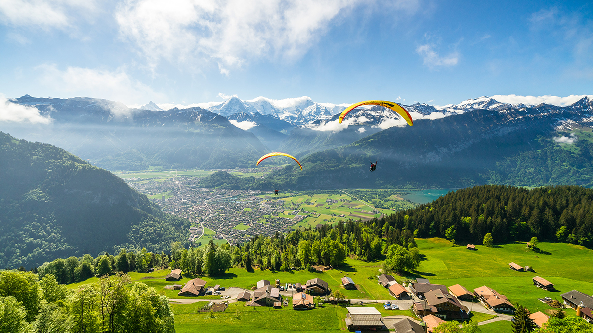
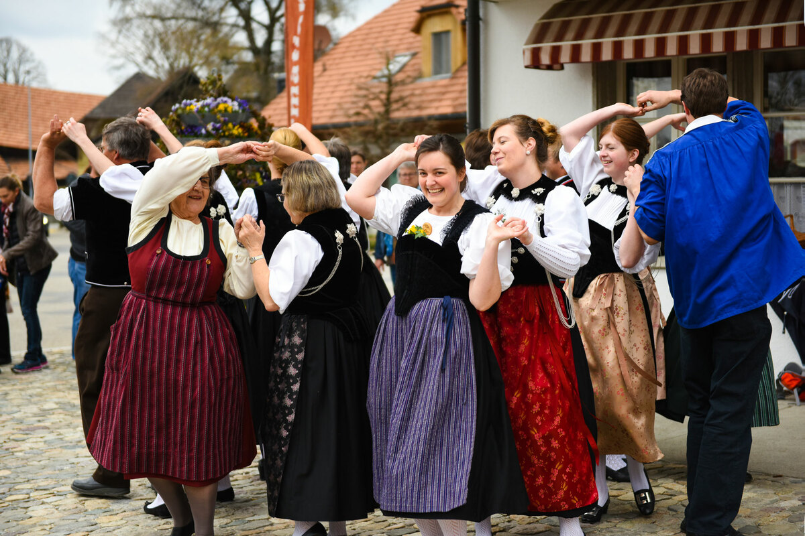
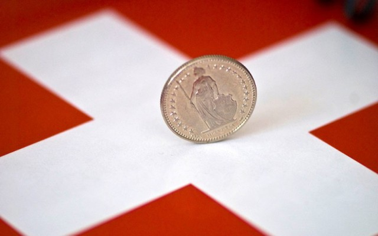
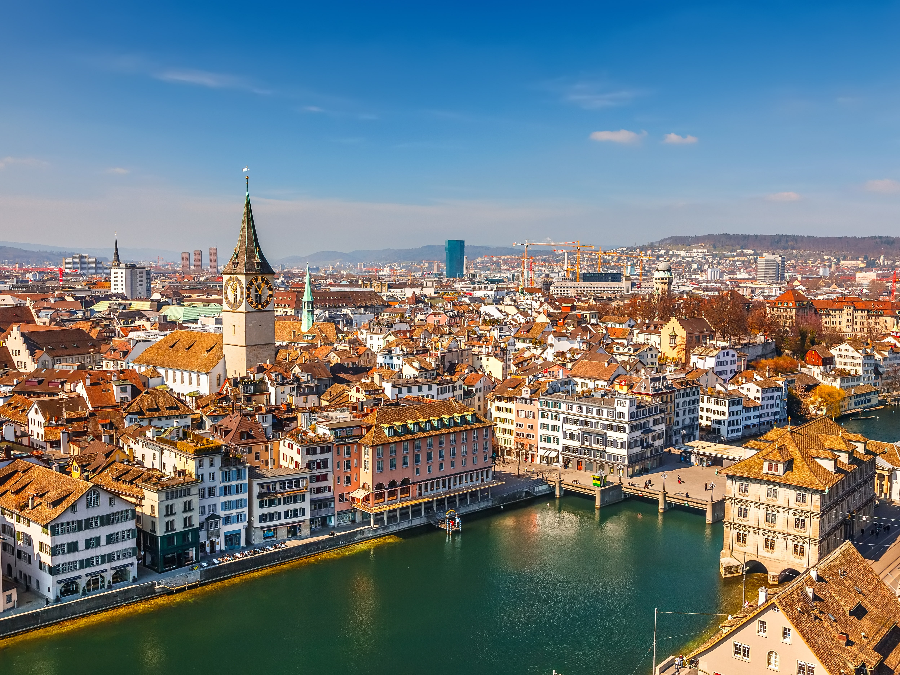
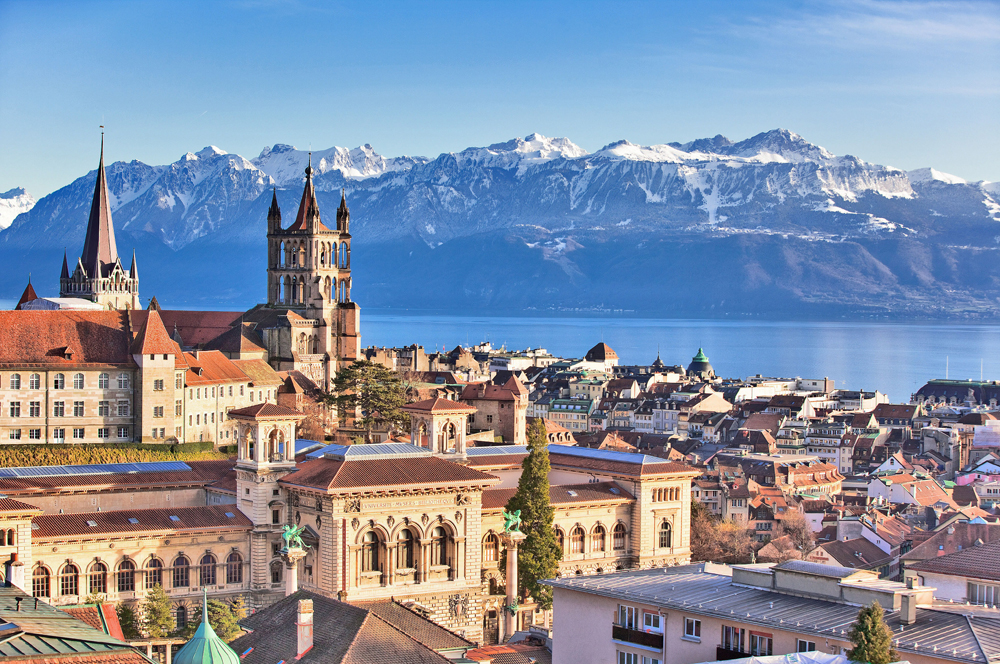
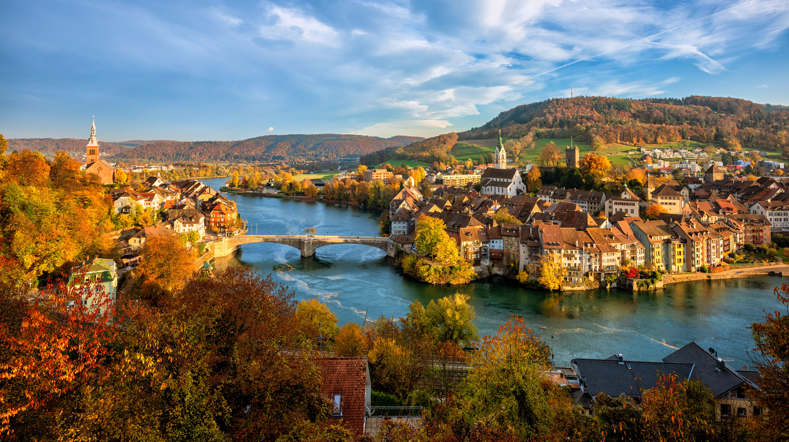
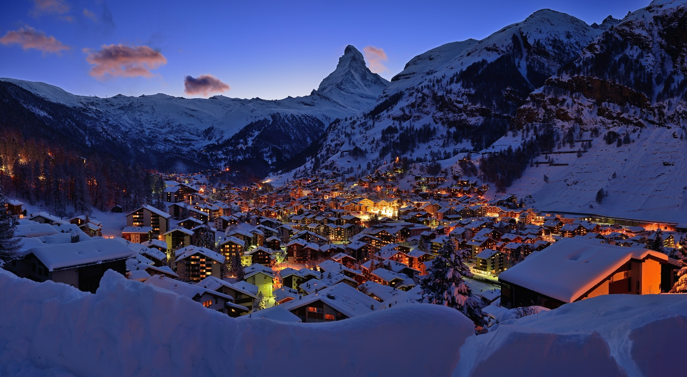
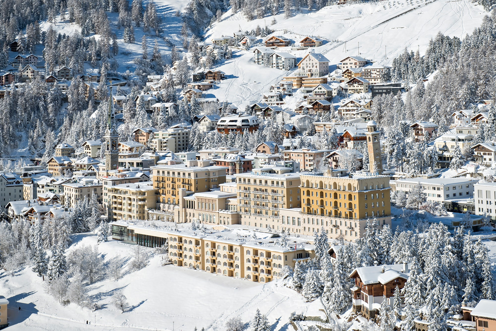

Switzerland, officially the Swiss Confederation, is a landlocked country located at the confluence of Western, Central and Southern Europe. It is bordered by Italy to the south, France to the west, Germany to the north and Austria and Liechtenstein to the east. Switzerland is geographically divided among the Swiss Plateau, the Alps and the Jura; the Alps occupy the greater part of the territory, whereas most of the country's population of 9 million are concentrated on the plateau, which hosts the largest cities and economic centres, including Zürich, Geneva and Basel.
The Swiss culture is distinguished by its diversity, as the country lies at the crossroads of several outstanding European cultures. Switzerland is also a multilingual country, as its national languages include German, French, Italian and Romansh. In addition, there are numerous dialects spoken in every region. Each canton has its unique cultural features. The culture, customs and traditions differ in different regions of the country, as each canton and municipality has cultural autonomy.
Switzerland, a country that espouses neutrality, is a prosperous and modern market economy with low unemployment, a highly skilled labor force, and a per capita GDP among the highest in the world. Switzerland's economy benefits from a highly developed service sector, led by financial services, and a manufacturing industry that specializes in high-technology, knowledge-based production. Its economic and political stability, transparent legal system, exceptional infrastructure, efficient capital markets, and low corporate tax rates also make Switzerland one of the world's most competitive economies.
Switzerland's open fields, shuthing weather, chocolate, milk, butter etc. attracts thousands of visitors every year. Some must visit places in Switzerland are -
The largest city in Switzerland, Zurich is a major contemporary art and shopping destination. Important artworks are displayed in the Kunsthaus and the Rietberg Museum, while those who consider shopping an art can hone their skills along Bahnhofstrasse and Niederdorf. Chagall's stained glass windows in the Fraumunster amaze, and Zurich's 500 clubs and bars—including several in swimming pools—pulse with life 'til the early hours. This city on Lake Zurich has excellent public transit and a free bike rental system.
Geneva is a city in Switzerland that lies at the southern tip of expansive Lac Léman (Lake Geneva). Surrounded by the Alps and Jura mountains, the city has views of dramatic Mont Blanc. Headquarters of Europe’s United Nations and the Red Cross, it’s a global hub for diplomacy and banking. French influence is widespread, from the language to gastronomy and bohemian districts like Carouge.
Basel, Switzerland, is a place of exciting contrasts. A city with historical buildings next to modern architecture. Where a young and dynamic art scene exists alongside world-renowned museums. Cosmopolitan ambience here, lively traditions there. You just have to experience Basel for yourself.
When most people think of Zermatt, they think of one thing: The Matterhorn. This ultimate Swiss icon looms over Zermatt, first drawing visitors here in the 1860s. The village of Zermatt itself is lovely and car-free, with old-fashioned brown chalets and winding alleys. (Don’t worry, you don’t have to walk everywhere—there are electric vehicles and horse-drawn cabs.) Skiing in the region often lasts through early summer, but when the weather’s warmer, it’s a great time to hike.
Although originally known as a summer destination, when the first snowflakes land in St-Moritz, so do the international scenesters, bundled up in the latest "must-have" accessories. In winter, take a ride on the Glacier Express from Zermatt to arrive in style. Cable cars ascend to three nearby mountain tops. Hundreds of miles of ski trails and a frozen lake comprise the area's most popular sports venues. Follow the Romans' example and try one of the city's mineral springs, such as St-Moritz Bader.
